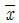
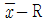
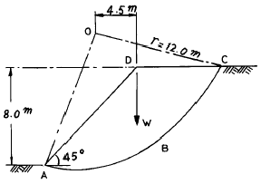
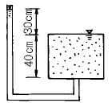
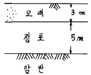

건설재료시험기사 (2003-03-16 기출문제)
1과목: 콘크리트공학
1. 프리텐션방식의 프리스트레싱을 할 때 콘크리트의 압축강도는 최소 몇 ㎏f/㎝2이상이어야 하는가?
- 250
- 300
- 350
- 400
(정답률: 알수없음)

2. 페놀프탈레인 1% 알콜용액을 구조체 콘크리트 또는 코어 공시체에 분무하여 측정할 수 있는 것은?
- 균열폭과 깊이
- 철근의 부식정도
- 콘크리트의 투수성
- 콘크리트의 중성화깊이
(정답률: 알수없음)
3. 보통포틀랜드시멘트를 사용한 경우 콘크리트의 표준 습윤 양생 기간은?
- 1일 이상
- 3일 이상
- 5일 이상
- 7일 이상
(정답률: 알수없음)
4. 플라이애쉬를 사용한 콘크리트의 특성중 옳지 않은 것은?
- 콘크리트의 단위수량을 증가시킨다.
- 수밀성이 좋으므로 수리구조물에 적합하다.
- 수화열이 적고 건조수축이 적다.
- 해수에 대한 내화학성이 크다.
(정답률: 알수없음)
5. 다음 중 콘크리트의 초기균열의 원인이 아닌 것은?
- 소성수축
- 소성침하
- 수화열
- 알칼리-골재 반응
(정답률: 알수없음)
6. 시험에 의해서 W/C비를 결정하기 위해서 C/W비를 1.8, 2.0, 2.2로 변화시켜 가면서 f28을 구한 결과 각각 150, 180, 210kgf/cm2의 압축강도를 얻었다. 이로부터 구한 관계식 f28 = A + B(C/W)에서 A와 B의 값은 각각 얼마인가?
- -120, 150
- -210, 215
- -139, 230
- -76, 190
(정답률: 알수없음)
7. 현장에서 표면수율이 각각 1.5%와 5.3%인 굵은골재 760kgf과 잔골재 560kgf를 배합하려고 단위수량을 수정하고자 한다. 시방배합에서 구한 단위수량이 122kgf/m3일 때 수정된 단위수량은 얼마인가?
- 77.1 kgf/m3
- 80.9 kgf/m3
- 163.1 kgf/m3
- 122 kgf/m3
(정답률: 알수없음)
8. 현장에서 콘크리트의 재료를 계량할 때 1회 계량분에 대해 허용되는 오차의 범위 중 틀린 것은?
- 물은 1% 이하로 한다.
- 시멘트는 1% 이하로 한다.
- 혼화재는 2% 이하로 한다.
- 골재는 2% 이하로 한다.
(정답률: 알수없음)
9. 콘크리트 치기에 있어서 유의사항과 관계가 먼 것은?
- 콘크리트치기 도중 블리딩수가 있을 경우 그 물을 제거하고 그 위에 콘크리트를 친다.
- 콘크리트 치기의 1층 높이는 진동기의 성능을 고려하여 1m 정도로 한다.
- 2층 이상으로 나누어 콘크리트를 치는 경우 아래층이 굳기 시작하기 전에 윗층의 콘크리트를 친다.
- 콘크리트의 자유낙하 높이는 가능한 낮게 하며 수직으로 떨어 뜨린다.
(정답률: 알수없음)
10. 콘크리트의 강도에 대한 설명 중 잘못된 것은?
- 콘크리트의 강도가 크면 클수록 취성파괴 거동을 나타낸다.
- 콘크리트 강도가 크면 클수록 콘크리트의 탄성계수도 증가한다.
- 콘크리트의 설계기준강도는 일반적으로 표준양생한 재령 28일 표준공시체의 1축압축 강도를 말한다.
- 콘크리트 강도의 단위는 kgf 또는 tonf로 표현한다.
(정답률: 알수없음)
11. 다음 관리도의 종류에서 정규분포이론이 적용되지 않은 것은?
- P 관리도(불량률 관리도)
- x 관리도(측정값 자체의 관리도)

- R 관리도(평균값과 범위의 관리도) - σ 관리도(평균값과 표준편차의 관리도)
- σ 관리도(평균값과 표준편차의 관리도)
(정답률: 알수없음)
12. 콘크리트 배합설계시 배합강도(fcr) 결정에 관한 설명 중 틀린 것은? (단, s :압축강도의 표준편차 (kgf/cm2))
- 콘크리트의 배합강도(fcr)는 설계기준강도(fck)보다 크게 정해야 한다.
- 현장 콘크리트의 압축강도 시험값이 설계기준강도 이하로 되는 확률은 5%이하여야 하고 설계기준강도의 95%이하로 되는 확률은 0.13% 이하여야 한다.
- 콘크리트의 압축강도 시험값이란 굳지 않은 콘크리트에서 채취하여 제작한 공시체를 표준양생하여 얻은 압축강도의 평균값을 말한다.
- 배합강도 결정은 다음 두 식에 의한 값 중 큰값을 적용한다. fcr ≥ fck + 1.64s (kgf/cm2), fcr ≥ 0.85 fck + 3s (kgf/cm2)
(정답률: 알수없음)
13. 시멘트에 대한 설명 중 틀린 것은?
- 시멘트의 분말도 또는 비표면적은 시멘트 입자의 크기를 나타내기 위한 것이다.
- 시멘트의 안정성이란 시멘트가 경화중에 체적이 팽창하여 팽창균열 등을 발생시킬 수 있으므로 팽창정도를 나타내기 위한 것이다.
- 시멘트의 강도는 그 시멘트를 사용한 콘크리트의 강도 추정을 위하여 활용되며, 일반적으로 시멘트풀의 강도로써 나타낸다.
- 시멘트 풀은 건조시키면 시멘트 겔 주위 모세관내의 수분이 증발하며 모세관수의 표면장력이 커지게 되어 수축한다.
(정답률: 알수없음)
14. 콘크리트의 균열은 재료, 시공, 설계 및 환경 등 여러 가지 요인에 의해 발생한다. 다음 중 재료적 요인과 가장 관련이 많은 균열현상은?
- 알칼리골재반응에 의한 거북등형상의 균열
- 온도변화, 화학작용 및 동결융해 현상에 의한 균열
- 콘크리트 피복두께 및 철근의 정착길이 부족에 의한 균열
- 재료분리, 콜드조인트(cold joint) 발생에 의한 균열
(정답률: 알수없음)
15. 콘크리트의 워커빌리티(workability)를 측정하기 위한 시험방법 중 콘크리트에 일정한 에너지를 가하여 밀도의 변화를 수치적으로 나타내는 시험법은?
- 흐름시험(flow test)
- 슬럼프시험(slump test)
- 리모울딩시험(remolding test)
- 다짐계수시험(comfacting factor test)
(정답률: 알수없음)
16. 일반적인 수중콘크리트의 재료 및 시공상의 주의사항을 바르게 기술한 것은?
- 공기중의 시공시 보다 설계기준강도를 작게 할 필요가 있다.
- 물의 흐름을 막은 정수중에는 콘크리트를 수중에 낙하시킬 수 있다.
- 물-시멘트비는 60% 이하, 단위시멘트량은 300 kg/m3 이상을 표준으로 한다.
- 트레미를 사용하여 콘크리트를 칠 경우 콘크리트를 치는 동안 일정한 속도로 수평이동시켜야 한다.
(정답률: 알수없음)
17. 수화열에 의한 매스콘크리트의 온도균열 저감대책으로 볼 수 없는 것은?
- 프리쿨링(pre-cooling)
- 알루미나시멘트의 사용
- 플라이애시시멘트의 사용
- 파이프쿨링(pipe-cooling)
(정답률: 알수없음)
18. 숏크리트(Shotcrete)는 압축공기로 콘크리트를 시공면에 뿜어붙이는 공법이다. 숏크리트에 관한 설명으로 잘못된것은?
- 건식법과 습식법이 있으며 사용수량이 적은 건식법이 품질관리 측면에서 좀 더 안정적이다.
- 기설 콘크리트면에 시공하는 경우에는 콘크리트면을 거칠게 하고 부착을 저해하는 이물질을 제거한다.
- 시공면이 흡수성인 경우에는 충분하게 흡수시킨 후 압축공기로 표면의 수분을 제거한다.
- 25mm 이상의 두꺼운 몰타르 층을 시공하는 경우에는 20mm이하의 얇은 층으로 나누어서 시공한다.
(정답률: 알수없음)
19. 시방배합상의 잔골재의 양은 500kgf이고 굵은골재의 양은 1000kgf이다. 표면수량은 각각 5%와 3%이었다. 현장배합으로 환산한 잔골재와 굵은골재의 양은?
- 잔골재 - 525kgf, 굵은골재 - 1030kgf
- 잔골재 - 475kgf, 굵은골재 - 970kgf
- 잔골재 - 470kgf, 굵은골재 - 975kgf
- 잔골재 - 520kgf, 굵은골재 - 1025kgf
(정답률: 알수없음)
20. 콘크리트 구조물은 온도변화, 건조수축 등에 의해서 균열이 발생되기 쉽다. 이러한 이유로 균열을 정해진 장소에 집중시킬 목적으로 단면 결손부를 설치하는데 이것을 무엇이라고 하는가?
- 수축이음
- 신축이음
- 시공이음
- 콜드 조인트(Cold joint)
(정답률: 알수없음)
2과목: 건설시공 및 관리
21.

품질관리도에서 1조의 측정치가 9, 7, 12, 13의 값을 가지며 2조의 측정치가 8, 9, 10, 12의 값을 가질 때 중심(CL)의 값은?- 9.75
- 10.00
- 10.25
- 10.50
(정답률: 알수없음)
22. 다음은 어떤 공사의 품질관리에 대한 내용이다. 가장 먼저 해야 할 일은?
- 품질특성의 선정
- 작업표준의 결정
- 관리한계 설정
- 관리도의 작성
(정답률: 알수없음)
23. 폭우시 옹벽 배면에는 침투수압이 발생되는데 이 침투수에 의한 중요 영향과 관계가 먼 것은?
- 옹벽저면에서의 양압력 증가
- 포화에 의한 흙의 무게 증가
- 활동면에서의 양압력 증가
- 수평저항력의 증가
(정답률: 알수없음)
24. 다음의 기초공법 중에서 부지의 여유가 있을 때 경제적으로 적용할 수 있는 공법은?
- 케이슨 공법
- 오픈 컷 공법
- 쉴드 공법
- 어스드릴 공법
(정답률: 알수없음)
25. 거푸집 및 동바리를 떼어내는 시기는 많은 요인에 따라 다르므로 떼어내는 시기를 잘못 잡음으로 큰 재해를 일으키는 경우가 많다. 철근 콘크리트에서 거푸집을 떼어내도 좋은 시기를 압축강도의 값으로 할 경우 기둥,벽,보의 측면인 경우 최소 얼마의 값이면 떼어내도 좋은가?
- 20㎏f/㎝2
- 35㎏f/㎝2
- 50㎏f/㎝2
- 80㎏f/㎝2
(정답률: 알수없음)
26. 노상이나 노반의 다짐이 완료되면 로울러나 재하된 덤프 트럭을 주행시켜 침하량을 측정하는 방법은?
- 프루프 로울링
- 벤켈먼 빔 시험
- 일래스타이트
- 히터 플레이너
(정답률: 알수없음)
27. 다음의 토공기계의 작업량산정에 따른 규격을 연결 지은 것 중 잘못 연결된 것은?
- 트렉터 쇼벨 - 버킷용량(m3)
- 모터 스크레이퍼 - 보울 용량(m3)
- 불도우져 - 토공판 용량(m3)
- 모터그레이드 - 버킷용량(m3)
(정답률: 알수없음)
28. 표면차수벽 댐은 core의 filter 층이 없이 제체를 느슨한 암으로 축조하여 상하사면은 암의 안식각에 가깝게 하고, 제체가 어느 정도 축조된 후 상류측에 불투수층 차수벽을 설치하여 차수역할을 하며 차수벽과 rock 사이에는 입경이 작은 암석층을 두어 완충역할을 하게 한다. 다음중 표면차수벽 댐 설치에 유리한 조건이 아닌 것은?
- 대량의 점토 확보가 용이한 경우
- 짧은 공사기간으로 급속시공이 필요한 경우
- 동절기 및 잦은 강우로 점토시공이 어려운 경우
- 추후 댐 높이의 증축이 예상되는 경우
(정답률: 알수없음)
29. Preloading공법에 대한 설명 중에서 적당하지 못한 것은?
- 구조물의 잔류 침하를 미리 막는 공법의 일종이다.
- 도로, 방파제 등 구조물 자체가 재하중으로 작용하는 형식이다.
- 공기가 급한 경우에 적용한다.
- 압밀에 의한 점성토지반의 강도를 증가시키는 효과가 있다.
(정답률: 알수없음)
30. 암거의 배열방식중 집수지거를 향하여 지형의 경사가 완만하고 같은 정도의 습윤상태인 곳에 적합하며 1개의 간선 집수지 또는 집수지거로 가능한 한 많은 흡수거를 합류하도록 배열하는 방식은?
- 집단식(Grouping system)
- 자연식(Natural system)
- 빗식(Gridiron system)
- 차단식(Intercepting system)
(정답률: 알수없음)
31. 유토곡선에 대한 설명 중 옳지 않은 것은?
- 평행선에서 토량곡선의 꼭지점 까지의 높이는 절토에서 성토까지 운반 토량을 나타낸다.
- 곡선의 최대값은 성토에서 절토로 옮기는 점이다.
- 평균선이 곡선과 교차된 두점 사이에서는 절토와 성토는 균형이 된다.
- 절토 부분에서는 위로 향하고 성토 부분에서는 아래로 향한다.
(정답률: 17%)
32. 돌쌓기의 방법 및 시공에 대하여 맞지 않는 것은?
- 돌을 깨끗이 씻고 특히 찰쌓기는 수분을 충분히 흡수 시켜야 한다.
- 돌의 크기가 다르면 큰돌을 아래층에 쌓아서 안정도를 높인다.
- 수성암과 같이 절리가 있는 돌은 하중 방향과 평행하게 쌓는다.
- 견치돌은 사면에 직각으로 설치한다.
(정답률: 알수없음)
33. 토취장에서 흙을 적재하여 고속도로의 노체를 성토코자 한다. 노체는 다짐을 시행할 때 자연상태 때의 흙의 체적을 1 이라 하고, 느슨한 상태에서 1.25, 다져진 상태에서 토량변화율이 0.8이라면 본공사의 토량 환산 계수는?
- 0.64
- 0.80
- 0.70
- 1.25
(정답률: 알수없음)
34. 다음 건설기계 중 굴착과 싣기를 같이 할 수 있는 기계가 아닌 것은?
- 백호우
- 트랙터 쇼벨
- 준설선(dredger)
- 리퍼(ripper)
(정답률: 알수없음)
35. 다음 발파 용어 중에서 임계심도를 설명한 것은 어느 것인가?
- 암반이나 공기가 물에 접하고 있는 표면
- 자유면에 균열이 생길 때 폭약에서 자유면까지의 깊이
- 폭약의 중심에서 자유면까지의 최단거리
- 누두공과 최소저항선과의 비
(정답률: 알수없음)
36. 피어(Pier)기초란 구조물의 하중을 충분한 지지력을 얻을 수 있는 지반에 전달하기 위하여 수직공을 굴착하여 그 속에 현장 콘크리트를 타설하여 만들어진 주상(柱狀)의 기초를 의미한다. 다음중 피어기초의 특징이 아닌 것은?
- 소음이 없으므로 도회지 공사에 적합하다.
- 선단지지력을 확실히 할 수 있다.
- 말뚝의 본수를 작게할 수 있다.
- 작은 구조물의 기초에 적합하다.
(정답률: 알수없음)
37. 함수비 조절과 재료혼합을 위하여 사용되는 기계는?
- 스크레퍼(Scraper)
- 스태빌라이져(Stabilizer)
- 콤펙터(Compactor)
- 불도저(Buldozer)
(정답률: 알수없음)
38. 터널굴착에 있어서 록 보울트(Rock bolt)와 뿜어 붙이기 콘크리트와 가축성(可縮性)동바리공을 병용하는 터널굴착 공법은?
- 링컷(Ring cut)공법
- 상부링컷 공법
- NATM 공법
- JTM 공법
(정답률: 알수없음)
39. 정수의 값이 3, 동결지수가 400℃·days일 때, 데라다공식을 이용하여 동결깊이를 구하면?
- 30cm
- 40cm
- 50cm
- 60cm
(정답률: 알수없음)
40. 우물통기초의 수중 거치 방법 중 수심이 5m이하일때 가장 적합한 방법은?
- 비계식 웰(well) 침하법
- 축도(築島)법
- 부동식 침하법
- 항타법
(정답률: 알수없음)
3과목: 건설재료 및 시험
41. 강의 열처리 방법중 변태점 이상 온도로 가열해서 공기중에서 서서히 냉각, 강속의 조직이 치밀하게 되고 변형이 제거되는 것을 무엇이라 하는가?
- 불림
- 풀림
- 담금질
- 뜨임
(정답률: 알수없음)
42. 시멘트의 응결시험 방법으로 옳은 것은?
- 길모아침에 의한 방법
- 오오토 클레이브 방법
- 블레인 방법
- 비비 시험
(정답률: 알수없음)
43. 강철은 선철을 용융상태에서 정련한 것이다. 이 제조법에 속하지 않는 것은?
- 평로제강법
- 고로제강법
- 도가니제강법
- 전로제강법
(정답률: 알수없음)
44. 대폭파 또는 수중폭파를 동시에 실시하기 위해 뇌관대신 사용하는 것은?
- 도화선
- 도폭선
- 전기뇌관
- 첨장약
(정답률: 알수없음)
45. 광물질 혼화재 중의 실리카가 시멘트 수화생성물인 수산화칼슘과 반응하여 장기강도증진효과를 발휘하는 현상을 무엇이라 하는가?
- 포졸란반응(pozzolanic reaction)
- 수화반응(hydration)
- 볼 베아링(ball bearing) 작용
- 충전(micro filler)효과
(정답률: 알수없음)
46. 플라스틱의 내식성에 대한 설명 중 옳지 않은 것은?
- 내식성이 우수하다.
- 일반적으로 비흡수성이다.
- 약알카리에 약하다.
- 화학약품에 대한 저항성은 열경화성 수지와 열가소성수지가 다른 특성을 갖고 있다.
(정답률: 알수없음)
47. 골재의 조립율 시험에 사용되는 10개의 체규격에 해당되지 않는 것은?
- 25mm
- 10mm
- 1.2mm
- 0.6mm
(정답률: 알수없음)
48. 굵은골재를 건조시켜 대기중에서 무게를 측정하니 2000gf이며 대기중에서 표면건조 포화상태시의 무게가 2100gf, 물속에서의 무게가 1300gf이었을 때 이 골재의 표면건조 포화상태에서의 비중은 얼마인가?
- 2.63
- 2.65
- 2.67
- 2.69
(정답률: 알수없음)
49. 르샤틀리에 비중병에 0.5눈금까지 광유를 주입하고 다시 시멘트 64g을 주입하니 눈금이 20.7로 되었을때 이 시멘트의 비중은?
- 3.09
- 3.14
- 3.17
- 3.20
(정답률: 알수없음)
50. 시멘트의 풍화에 관한 설명으로 옳지 않은 것은?
- 풍화된 시멘트는 응결이 늦어지고 강도가 저하된다.
- 시멘트가 대기중의 수분을 흡수하여 수화작용으로 풍화가 일어난다.
- 풍화는 고온, 다습하고 분말도가 고울수록 빨라진다.
- 풍화된 시멘트는 비중이 커지므로 풍화의 정도를 아는데는 비중이 척도가 된다.
(정답률: 알수없음)
51. 가열 아스팔트 안정처리 혼합물의 마샬시험과 관계가 없는 것은?
- 안정도
- 흐름값
- 공극률
- 마모감량
(정답률: 알수없음)
52. 건설공사 품질시험기준에서 수공구조물공사의 호안용 모르터블럭의 압축강도시험은 현품으로 몇 매마다 실시 하는가?
- 2000매
- 3000매
- 4000매
- 5000매
(정답률: 알수없음)
53. 고성능감수제를 사용한 콘크리트에 대한 설명 중 틀린것은?
- 고성능감수제는 단위수량을 20∼30%정도 크게 감소시킬 수 있어서 고강도콘크리트 제조에 주로 사용된다.
- 고성능감수제 사용 콘크리트는 일반적으로 믹싱 후 경과시간 2시간까지는 슬럼프 손실현상이 거의 없다.
- 고성능감수제의 첨가량이 증가할수록 워커빌리티는 증가하지만 과도하게 사용하면 재료분리가 발생한다.
- 고성능감수제를 사용하면 수량이 대폭 감소되기 때문에 건조수축이 적다.
(정답률: 알수없음)
54. AC 85-100 도로포장용 아스팔트가 있다. 85-100이란 숫자는 다음중 무엇을 나타낸 것인가?
- 아스팔트 침입도
- 아스팔트 신도
- 아스팔트 점도
- 아스팔트 연화도
(정답률: 알수없음)
55. 다음 중 응결지연제의 사용목적으로 틀린 것은?
- 시멘트의 수화반응을 늦추어 응결과 경화시간을 길게 할 목적으로 사용한다.
- 서중콘크리트나 장거리 수송 레미콘의 워커빌리티 저하방지를 도모한다.
- 콘크리트의 연속타설에서 작업이음(cold and construction joint)을 방지한다.
- 거푸집의 조기탈형과 장기강도 향상을 위하여 사용한다.
(정답률: 알수없음)
56. 토목분야의 건설공사 품질시험기준중 노상의 시험종목이 아닌 것은?
- 액성한계시험
- 다짐시험
- 함수량시험
- 현장밀도시험
(정답률: 알수없음)
57. 습윤상태에 있어서 중량이 100gf의 골재를 건조시켜 표면 건조상태에서 95gf, 기건(氣乾)상태에서 93gf, 로건조 상태에서 92gf이 되었을때 유효 흡수율은?
- 1.2%
- 2.2%
- 3.2%
- 4.2%
(정답률: 알수없음)
58. 아스팔트 혼합재에서 채움재(filler)를 혼합하는 목적은 다음 중 어느 것인가?
- 아스팔트의 비중을 높이기 위해서
- 아스팔트의 점도를 높이기 위해서
- 아스팔트의 공극을 매우기 위해서
- 아스팔트의 내열성을 증가시키기 위해서
(정답률: 알수없음)
59. 석재의 비중은 석재의 종류에 따라 다르나 일반적으로 어떤 비중을 말하며 보통 비중은 얼마로 보는가?
- 포수비중, 2.65
- 겉보기 비중, 2.85
- 포수비중, 2.85
- 겉보기 비중, 2.65
(정답률: 알수없음)
60. 목재의 강도에 대하여 바르게 설명한 것은?
- 일반적으로 휨 강도는 압축강도보다 작다.
- 일반적으로 섬유방향의 인장강도는 압축강도보다 크다.
- 일반적으로 섬유에 평행방향의 압축강도는 섬유에 직각 방향의 압축강도보다 작다.
- 일반적으로 전단강도는 휨 강도보다 크다.
(정답률: 알수없음)
4과목: 토질 및 기초
61. 선행압밀하중을 결정하기 위해서는 압밀시험을 행한 다음 어느 곡선으로부터 구할수 있는가?
- 간극비 - 압력(log 눈금)곡선
- 압밀계수 - 압력(log 눈금)곡선
- 일차 압밀비 - 압력(log 눈금)곡선
- 이차 압밀계수 - 압력(log 눈금)곡선
(정답률: 알수없음)
62. 다음중 Rankine 토압론의 기본가정에 속하지 않는 것은?
- 흙은 비압축성이고 균질의 입자이다.
- 지표면은 무한히 넓게 존재한다.
- 옹벽과 흙과의 마찰을 고려한다.
- 토압은 지표면에 평행하게 작용한다.
(정답률: 알수없음)
63. 연약점성토층을 관통하여 철근콘크리트 파일을 박았을 때 부마찰력(Negative friction)은? (단, 이때 지반의 일축압축강도 qu=2t/m2, 파일직경 D=50㎝, 관입깊이 ℓ =10m 임)
- 15.71t
- 18.53t
- 20.82t
- 24.24t
(정답률: 알수없음)
64. 노건조된 점토시료의 중량이 12.38g, 수은을 사용하여 수축한계에 도달한 시료의 용적을 측정한 결과가 5.98㎝3 일때의 수축한계는? (단, 비중은 2.65이다.)
- 10.6(%)
- 12.5(%)
- 14.6(%)
- 15.5(%)
(정답률: 알수없음)
65. 다음의 지반개량공법 중 탈수(脫水)를 주로하는 공법이 아닌 것은?
- 웰 포인트 공법
- 샌드 드레인 공법
- 프리로딩(Preloading) 공법
- 바이브로 후로테이숀 공법
(정답률: 알수없음)
66. Terzaghi는 포화점토에 대한 1차 압밀이론에서 수학적 해를 구하기 위하여 다음과 같은 가정을 하였다. 이 중 옳지 않은 것은?
- 흙은 균질하다.
- 흙입자와 물의 압축성은 무시한다.
- 흙속에서의 물의 이동은 Darcy 법칙을 따른다.
- 투수계수는 압력의 크기에 비례한다.
(정답률: 알수없음)
67. 내부마찰각 øu = 0, 점착력 Cu = 4.5t/m2, 단위중량이 1.9t/m3되는 포화된 점토층에 경사각 45°로 높이 8m인 사면을 만들었다. 그림과 같은 하나의 파괴면을 가정했을때 안전율은? (단, ABCD의 면적은 70m2이고, ABCD의 무게중심은 O점에서 4.5m거리에 위치하며, 호 AC의 길이는 20.0m이다.)

- 1.2
- 1.8
- 2.5
- 3.2
(정답률: 알수없음)
68. 물로 포화된 실트질 세사(細砂)의 N치를 측정한 결과 N = 33이 되었다고 할때 수정 N치는? (단, 측정지점까지의 롯드(Rod)길이는 35m이다.)
- 43
- 35
- 21
- 18
(정답률: 알수없음)
69. 다음 그림에서 한계동수구배를 구하여 분사현상에 대한 안전율을 구하면? (단, 모래의 Gs = 2.65, e = 0.65이다.)

- 1.0
- 1.3
- 1.6
- 2.0
(정답률: 알수없음)
70. rod에 붙인 어떤 저항체를 지중에 넣어 타격관입, 인발 및 회전할 때의 흙의 전단강도를 측정하는 원위치 시험은?
- 보링(boring)
- 사운딩(sounding)
- 시료채취(sampling)
- 비파괴 시험(NDT)
(정답률: 알수없음)
71. 물의 표면장력 T=0.075 g/㎝, 물과 유리관벽과의 접촉각이 0° , 유리관의 지름 D=0.01㎝ 일때, 모관수의 높이 hc는?
- 30㎝
- 28㎝
- 25㎝
- 20㎝
(정답률: 알수없음)
72. 지표면에 집중하중이 작용할때 지중연직응력(地中鉛直應力)에 관한 다음사항중 옳은 것은? (단, Boussinesq 이론을 사용)
- 흙의 영(young)율 E에 무관하다.
- E에 정비례한다.
- E의 제곱에 정비례한다.
- E의 제곱에 반비례한다.
(정답률: 알수없음)
73. 어떤 흙의 전단실험결과 C=1.8kg/cm2, ø=35°, 토립자에 작용하는 수직응력 σ =3.6kg/cm2일 때 전단강도는?
- 4.89kg/cm2
- 4.32kg/cm2
- 6.33kg/cm2
- 3.86kg/cm2
(정답률: 알수없음)
74. 그림과 같은 점토층의 압밀속도를 계산한 결과 90%압밀에 소요되는 시간이 5년이었다. 만일 암반층 대신 모래층이 존재한다면 압밀소요 시간은?

- 10년
- 5년
- 2.5년
- 1.25년
(정답률: 알수없음)
75. 다짐에 대한 다음 사항중 옳지 않은 것은?
- 점토분이 많은 흙은 일반적으로 최적함수비가 낮다.
- 사질토는 일반적으로 건조밀도가 높다.
- 입도배합이 양호한 흙은 일반적으로 최적함수비가 낮다.
- 점토분이 많은 흙은 일반적으로 다짐곡선의 기울기가 완만하다.
(정답률: 알수없음)
76. 표준관입시험(SPT)에 대하여 옳지 않은 것은?
- 지하수위를 알아내기 위하여 하는 현장시험의 일종이다
- N값이 클수록 지반의 강도는 크고 침하가능성은 적다
- 흐트러지지 않은 시료는 얻을수 없다
- 모래지반의 상대밀도, 점토의 컨시스텐시의 개략적 추정이 가능하다.
(정답률: 알수없음)
77. 모래지반에 30cm×30cm의 재하판으로 재하실험을 한 결과 10t/m2의 극한 지지력을 얻었다. 4m×4m의 기초를 설치할때 기대되는 극한지지력은?
- 10t/m2
- 100t/m2
- 133t/m2
- 154t/m2
(정답률: 알수없음)
78. 습윤단위중량이 2.0t/m3, 함수비 25%, 비중이 2.7인 경우 건조밀도와 포화도는?
- 1.93t/m3, 97.8%
- 1.6t/m3, 92.3%
- 1.93t/m3, 92.3%
- 1.6t/m3, 97.8%
(정답률: 알수없음)
79. 내부 마찰각 ø=0인 점토로 일축압축 시험을 시행하였다. 다음 설명 중 옳지 않은 것은?
- 점착력의 크기는 일축압축 강도의 1/2이다.
- 전단강도의 크기는 점착력의 크기의 1/2이다.
- 파괴면이 주응력면과 이루는 각은 45° 이다.
- Mohr의 응력원을 그리면 그 반경이 점착력의 크기와 같다.
(정답률: 알수없음)
80. 말뚝재하시험시 연약점토지반인 경우는 pile의 타입 후 20 여일이 지난 다음 말뚝재하시험을 한다. 그 이유는?
- 주면 마찰력이 너무 크게 작용하기 때문에
- 부마찰력이 생겼기 때문에
- 타입시 주변이 교란되었기 때문에
- 주위가 압축되었기 때문에
(정답률: 알수없음)